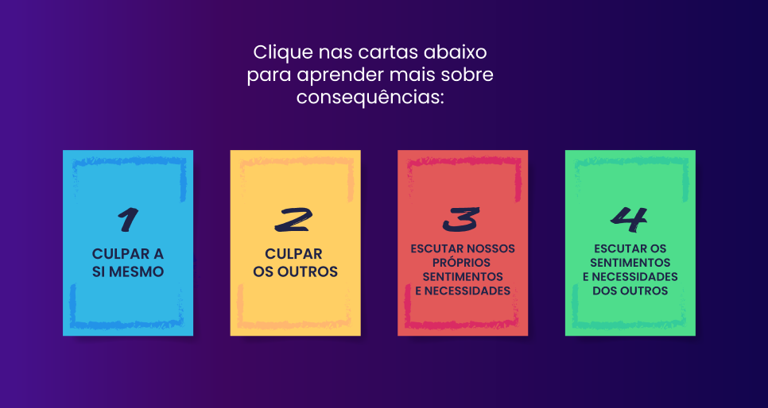

Programar estruturas de dados na elaboração de programas e sistemas
Vamos iniciar os estudos
PlayAssista ao vídeo abaixo para uma introdução aos seus estudos
Como a Sara e o Pedro devem agir diante da atitude de Marília?

Segundo o dicionário proatividade é: Característica de quem busca identificar ou resolver os problemas por antecipação, com antecedência; presteza e diligência.
Essa capacidade de identificação e resolução de problemas requer iniciativa e qualificação que é conquistada à medida que nos dispomos a aprender de forma contínua e ininterrupta.
Cada vez mais, o mundo do trabalho requer profissionais competentes e proativos, que sejam técnicos, mas que também contemplem boas doses de iniciativas e competências socioemocionais, por isso é grande importância manter a comunicação não violenta, conhecida como CNV.
Diariamente nós precisamos tomar decisões que podem ou não gerar um impacto significativo na vida. Mas é por meio da iniciativa, grande aliada da proatividade, que fazemos a diferença no contexto ao qual estamos inseridos.
Você já deve ter percebido que, em quase todas as situações de nosso cotidiano, é possível exercer a iniciativa. Isso acontece desde uma melhoria sugerida no ambiente de trabalho ou uma simples ajuda para um idoso atravessar a rua. Por isso, precisamos estar atentos e prontos para colocar a iniciativa em prática.

Muitas vezes temos excelentes ideias, mas que infelizmente não rompem o campo mental e acabam ficando guardadas em nosso intelecto.
Temos medo de que a ideia não seja bem aceita, medo que ela não seja tão legal como imaginamos e até medo do que podem pensar ao nosso respeito por estarmos interessados em expressar uma melhoria.
Mas é necessário que rompamos com esses medos! Existe uma frase do Nelson Mandela que desejo compartilhar com você: “Aprendi que a coragem não é a ausência do medo, mas o triunfo sobre ele. O homem corajoso não é aquele que não sente medo, mas o que conquista esse medo”.
O contexto de trabalho, assim com a própria vida social e familiar necessita de pessoas corajosas, aptas a enfrentarem seus medos por acreditarem que a melhoria contínua é possível, por acreditar que as equipes podem avançar em seus potenciais, pessoas que buscam sempre a qualidade, cientes de que uma única pessoa não pode sozinha realizar uma mudança extraordinária e de grande impacto, mas que pode, dar o primeiro passo
E o primeiro passo é necessário em cada grande conquista, é por meio de iniciativas que uma pessoa aprende a andar, isso não a poupa de tombos no processo, mas a perseverança em alcançar o seu objetivo permite, mesmo sendo apenas um bebezinho enfrente seus medos para realizar o feito de andar. E é assim na vida profissional, bem como na vida familiar e social.
Para uma melhor compreensão de proatividade, clique no vídeo a seguir e assista um exemplo da aplicabilidade no cotidiano:
Como vimos, a proatividade é de grande relevância não só na vida profissional, como também, na vida social e familiar. Por isso, destacamos aqui alguns pilares da proatividade, que são: iniciativa, solução de problemas, qualidade e metas. Veja a imagem a seguir:
![Quatro pilares de cima para baixo, utilizando cores em tons claros
(azul, lilás, rosa e amarelo) contendo as seguintes informações: o primeiro pilar possui a palavra Iniciativa contendo ao lado
seguinte descrição: possuam iniciativa para fazer aquilo que deve ser feito, independentemente daquela atividade ser sua ou não;
o segundo pilar possui a palavra solução de problema contendo ao lado a seguinte descrição: apresentem solução para os problemas
em vez de criá-los, fazer de conta que não viu ou tentar transferi-los para outra pessoa; o terceiro pilar possui a palavra Qualidade
contendo ao lado a seguinte descrição: estejam preocupados com a qualidade em tudo que fazem, mesmo que a atividades seja das mais simples
e rotineiras e o quarto pilar possui a palavra Metas contendo ao lado seguinte descrição:procurem sair da sua zona de conforto e se arrisquem
em novos horizontes.](./img/ue14/Imagem 2.png)
O primeiro pilar refere-se a iniciativa, atualmente, muitas empresas buscam pessoas que superem as dificuldades de forma proativa. Dessa forma, a concorrência pode ser superada e o atendimento feito de forma satisfatória, já que os clientes e consumidores estão cada dia mais exigentes.
O segundo pilar da proatividade é a resolução de problemas, uma pessoa proativa vê em cada problema uma oportunidade de crescimento, diante dos desafios, dessa forma busca com tranquilidade apresentar alternativas. Para isso, é necessário identificar o máximo de características apresentados pelo problema e, por meio, de uma análise encontre caminhos que apontem para a resolução.
O terceiro pilar da proatividade refere-se a qualidade, quem tem iniciativa e busca solucionar problemas é, intrinsecamente, uma pessoa interessada na qualidade dos resultados, não acreditando na concepção de fazer por fazer, e está sempre pensando em melhorar processos, que pode ser desde de algo simples como conforto de sua própria casa, como a entrega de um serviço ou produto. A qualidade está muito atrelada com a empatia, ou seja, considerando que você tenta oferecer algo semelhante ao que gostaria de ter.
E por último, o quarto pilar que contempla as metas, uma pessoa proativa tem metas que proporcionam diretamente na qualidade da entrega, para isso é necessário que a pessoa encare desafios, vá com medo, mas vá, enfrentando-os com sabedoria, sabendo o momento de sair da zona de conforto para que continuamente seja sempre sua melhor versão e alcance com êxito as metas determinadas.
A pessoa proativa não aplica tais pilares para ser notada ou para chamar atenção da liderança, ela apenas não se paralisa diante das dificuldades, acredita na melhoria contínua e sabe que tem potencial para contribuir significativamente, seja na sua própria vida, das pessoas que ama, no ambiente profissional ou até mesmo no relacionamento social de uma forma mais ampla.
A proatividade é uma chave que abre possibilidades, uma fórmula que te propulsiona a ir, te capacita a ser um agente de solução e te faz empático. Refere-se, a ofertar o que se tem de melhor não para obter admiração de outros, mas sim para despertar nos outros a capacidade de contemplarem que a qualidade pode ser atingida desde que você se disponha a dar o primeiro passo, nem que para isso custe enfrentar seus próprios medos.
Ser proativo é ser instigado a fazer diferença, é tomar a decisão de subir o degrau da iniciativa, torna-se um agente solucionador, analisa-se problemas e propõem-se alternativas, tudo porque acredita-se que a qualidade que se deseja deve ser a mesma a ofertar e, para alcançá-la, é preciso romper limites, encarar os próprios medos e acreditar que cada um tem dentro de si a capacidade de tornar tangível o que provisoriamente não o é.
Segundo Rosenberg (2006, p.21) em seu livro Comunicação não-violenta: Técnicas para aprimorar relacionamentos pessoais e profissionais, o autor:
“
A CNV se baseia em habilidades de linguagem e comunicação que fortalecem a capacidade de continuarmos humanos, mesmo em condições adversas”.Ela não tem nada de novo: tudo que foi integrado à CNV já era conhecido havia séculos. O objetivo é nos lembrar do que já sabemos - de como nós, humanos, deveríamos nos relacionar uns com os outros - e nos ajudar a viver de modo que se manifeste concretamente esse conhecimento.Você se relaciona exatamente da mesma forma com todas as pessoas que conhece? Já comentou ou pensou na seguinte frase “ aquela pessoa é difícil”?
O Relacionamento interpessoal requer sempre uma boa comunicação, independente do nível de proximidade, às pessoas que se relacionam precisam zelar por uma comunicação clara e objetiva, de forma amigável e coerente.
Algumas pessoas abusam do nível de intimidade e “rompe limites” da boa convivência humana, acreditando serem despojadas e estarem apenas brincando, mas acabam “ferindo” de alguma forma a pessoa que recebe a brincadeira.
Cada pessoa carrega uma história que pode ser dotada ou não de marcas por acontecimentos mal
sucedidos que deixaram cicatrizes.
Muitas vezes, mesmo sem intenção, quando decidimos fazer brincadeiras como por exemplo do físico, do
jeito ou até da iniciativa da outra pessoa diante de alguma situação, acabamos sem perceber,
reavivando experiências traumáticas e paralisando a vida delas.
Temos opiniões diferentes e, claro, cada pessoa pensa de uma forma. O que nos leva ou não a concordar com o que o outro falar. Imagine ainda você desejar expressar uma opinião sobre determinado processo e a outra pessoa já te interromper, pedindo calma e dizendo que não é bem assim. Chato, não é? Principalmente se sua opinião ainda não foi concluída e você realmente estiver na calma. A atitude da pessoa que te pediu calma acaba criando um bloqueio com a que deseja se expressar.

Mas então como aplicar CNV nessa situação?
Ainda em seu livro de Comunicação não-violenta Rosenberg (2006, p.50) fala que o primeiro componente da CNV requer a separação entre a observação de avaliação. “Precisamos observar claramente, sem acrescentar nenhuma avaliação”.
No decorrer dos parágrafos Rosenberg (2006) afirma que ao combinar observação com avaliação, contribuímos para que as pessoas tendem a levar nosso comentário como crítica. Quando você recebe uma crítica um impulso natural é defesa, correto? Por mais que, posteriormente, analise o comentário e o entenda como oportunidade de melhoria, a princípio você pode ficar na defensiva justificando suas atitudes. Nesse contexto há uma grande dificuldade em separar a observação da avaliação.
Lembra do exemplo que citamos quando alguém te interrompe, pedindo calma, enquanto você expõe sua opinião? No princípio da CNV, por exemplo, ela primeiro pode te deixar terminar de falar e, posteriormente, substituir a expressão: calma, não é bem assim. Entendo seu posicionamento, mas no momento não poderemos tomar essa iniciativa, no entanto, guardarei sua sugestão para que se possível possa ser aplicada em outro contexto ou em um outro momento oportuno. Consegue perceber a diferença?
Deixo de interromper a pessoa pedindo calma e dizendo que não é assim, que é uma observação associada de avaliação, e substituo por ouvi-la e mostrar que a opinião dela tem valor, aplicando uma observação isenta de avaliação.
Se é fácil? Com certeza não. Aplicar a CNV nos mais diversos contextos os quais estamos inseridos requer além de disciplina, prática constante buscando sempre a melhoria na linguagem interpessoal.
Se separar a observação da avaliação é o primeiro passo para aplicar a CNV, o segundo é saber identificar e expressar sentimentos como afirma Rosenberg (2006, p.63).
Precisamos reconhecer nossos sentimentos diante das mais diversas situações e após identificá-lo saber expressar.
Vamos voltar para o nosso exemplo da pessoa que tenta expressar uma opinião e é interrompida por outra que pede calma e diz que não é bem assim. Agora, imagine que a pessoa que foi interrompida tenta expressar seu sentimento diante da situação e diz: Acho que quando você me interrompe isso não é legal. Veja que apesar de parecer, a pessoa não está expressando sentimento e sim uma opinião
Aí ela tenta reformular a frase e diz: Acredito que não é certo me interromper sem que termine de me ouvir, ainda assim é uma opinião.
Mas se a pessoa falar: Não gosto quando você me interrompe pedindo calma e dizendo que não é bem assim, me sinto frustrada e irritada. Dessa última forma, realmente a pessoa expressou seu sentimento em relação a interrupção da pessoa que pedia calma e dizia que não era bem assim.
Uma possível reação diante de uma mensagem negativa ao nosso respeito é raiva, mas ao aplicarmos a CNV segundo Rosenberg aprendemos que:
“
A CNV aumenta nossa consciência de que o que os outros dizem e fazem pode ser o estímulo, mas nunca a causa dos nossos sentimentos resultam de como escolhemos receber o que os outros dizem e fazem, bem como de nossas necessidades e expectativas específicas naquele momento (2006, p.79)Ele continua afirmando que temos quatro opções diante da mensagem negativa. Para conhecê-los, clique na carta e veja qual a consequência dela segundo Marshall B. Rosenberg:
Na CNV há um incentivo em ir além de achar um culpado, mas por meio dela poder identificar a raiz do problema expressando o que não foi atendido e como aquilo pode frustrá-la, pois segundo Rosemberg “quanto mais tivermos a capacidade de relacionar nossos sentimentos às nossas necessidades, mais fácil será para os outros reagir compassivamente” (2006, p.82).
Nossa real motivação em deixar de fazer algo não deve ter como base o medo da culpa e sim vir do coração. Nossas necessidades são a raíz dos nossos sentimentos e, muitas vezes, por não sabermos nos expressar a pessoa que recebe nossa mensagem acaba se convencendo de que você está emitindo uma crítica e não expressando uma necessidade que deixou de ser atendida.
Durante a comunicação, muitas vezes, concentramos nosso foco e total atenção para analisar o erro que alguém cometeu conosco do que na nossa necessidade que deixou de ser atendida e ao expressarmos essa análise acabamos emitindo uma crítica.
Certamente, provocando no receptor algum sentimento negativo diante da mensagem e um mecanismo de autodefesa e contra-ataque, podendo emitir uma nova análise de um erro, levando a um ciclo vicioso, que só será interrompido com a mudança de atitude de uma das partes, deixando de acusar para expressar sua real necessidade.
Na comunicação não violenta o foco não se concentra em apontar o erro do outro, mas sim a nossa capacidade de expressar uma necessidade pessoal que não foi atendida e o sentimento que isso provoca em nós, de forma que culpar ou afrontar.
Por isso, nunca seja a alternativa, mas que estamos sempre vigilantes na nossa capacidade de ser humano, com empatia, resiliência sem auto excluir ou excluir o outro, a CNV nos permite aprender com erros, nos permite zelarmos pela boa convivência da condição humana nos relacionamentos, pois somos seres sociais e que necessitam de convivência pacífica e harmoniosa seja qual for o contexto que estivermos inseridos, emocional, familiar e profissional.
Solução do problematizando